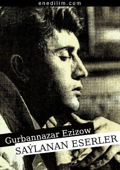

SEGurbannazar Ezizovning eng sara she'r va poemalari jamlangan to'plam.
Ushbu kitob turkman xalq yozuvchisi Gurbannazar Ezizovning ijodidan saralangan she'rlar va poemalar to'plamidir. Asarda shoirning hayotiy qarashlari, insoniy tuyg'ular va falsafiy mushohadalari o'z ifodasini topgan.